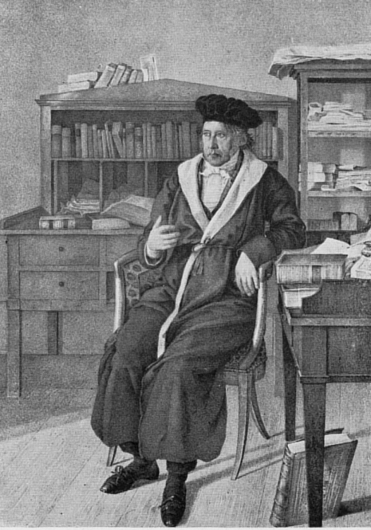

|
HOME
 Я какое-то время, явно под влиянием Шопенгауэра, оставлял работы Гегеля в стороне. Но раз мне показалась очень справедливой и достойной внимания мысль Гегеля об очень близкой мне теме - о том, что основателем нового идеализма (имматериализма или субъективного идеализма) следует считать вовсе не Беркли, а совсем наоборот - Локка, того же самого Локка, которого так яростно критиковал тот же Беркли, как самого страстного материалиста. Это все лишний раз дало мне несколько уроков. Во первых - не доверяй до конца в философии никому, хоть он и гений (я имею в виду Шопенгауэра), пока сам не убедишься. Во вторых: будь очень осторожен с кумирами (я о Беркли) - не жалей время, чтобы еще и еще во всем самому разобраться. И еще - произведение Гегеля об истории философии является очень интересным и поучительным трудом, написанным человеком, до тонкостей разбирающемся в своем деле, и похоже, очень увлеченным своим делом. (A.A.).
Если бросим взгляд назад на последний йройденный период, то мы убедимся, что в нем наступил поворотный пункт, состоящий в том, что христианская религия вложила свое абсолютное содержание в души, и оно в качестве божественного, сверхчувственного содержания стало пребывать в центре индивидуума, отделилось от мира и замкнулось в себя. Религиозной жизни противостоял внешний мир как мир природы и мир души, склонностей, человеческой природы, обладавший ценностью лишь постольку, поскольку он преодолевался. Эта точка зрения о равнодушии этих двух миров друг к другу разрабатывалась средними веками; они метались в рамках этого антагонизма и, наконец, преодолели его. Но ввиду того что существовало отношение человека к божественной жизни на земле, это преодоление должно выступить в форме порчи церкви, оконечивания вечного внесением в него чувственных склонностей человека, и точно так же и вечная истина была перенесена в сухой формальный рассудок, так что можно сказать, что разлучение самосознания исчезло в себе и благодаря этому исчезновению получилась возможность достичь примирения. Но так как это в себе сущее соединение потустороннего и посюстороннего миров носило такой искаженный характер, что лучшие чувства возмущались им и должны были обратиться против него, то появилась реформация отчасти в качестве отделения от католической церкви и отчасти в качестве реформации в рамках самой же этой церкви. Представление, что реформация привела лишь к отделению от католической церкви, является предрассудком; Лютер в такой же мере реформировал и католическую церковь, порча которой явствует для нас из его сочинений, из сообщений императоров и империи папе. Нужно также только читать те изображения состояния католического духовенства, римского двора, которые нам дают сами же католические епископы, заседавшие на Констанцком, Базельском и других соборах. Таким образом, принцип внутреннего примирения духа, которгй в себе уже был идеей христианства, был снова устранен и высгупил как внешний, непримиренный разлад. Это дает нам иллюстрацию медлительности мирового духа в своем деле преодоления этого внешнего характера. Он вышелушивает все внутреннее содержимое, видимость, внешняя форма еще остается, но, наконец, она оказывается лишь пустою оболочкой и внезапно появляется новая форма. В такие эпохи кажется, будто дух надел сапоги-скороходы, хотя раньше он двигался в своем развитии черепашьими шагами и даже отступал назад и удалялся от самого себя. Так как в себе свершилось примирение самосознания с наличным миром, то человек стал доверять самому себе, своему мышлению и чувственной природе вне и внутри него. Ему интересно, ему доставляет удовольствие делать открытия в области природы и искусств. На мирском горизонте взошел рассудок, человек осознал свою волю и силы, стал испытывать удовольствие от земли, от своей почвы, от своих занятий, так как он находил в них справедливость и разум. О изобретением пороха исчезла обуевавшая отдельного человека ярость борьбы. Романтическое влечение к случайной храбрости стало ставить себе целью другие приключения, не приключения, продиктованные ненавистью, самовольной местью, не приключения, в которых проявляется так называемое спасение невинных от рук несправедливых, а более безобидные приключения—ознакомление с землей, открытие путей в Восточную Индию и т. д. Человек открыл Америку, ее сокровища и народы, открыл природу, самого себя; мореходство было в то время высшей романтикой торговли. Наличный мир опять стоял перед человеком, как достойный того, чтобы дух интересовался им. Мыслящий дух снова оказывался в силах что-то совершать. Теперь наступила пора, когда должна была выступить лютерова реформация, ссылка на sensus communis (здравый человеческий смысл), признающее не авторитеты отцов церкви и Аристотеля, а исключительно лишь одушевляющий, дающий блаженство собственный, внутренний дух, дух, противоставляющий себя делам. Таким образом, церковь потеряла свою власть над ним, ибо ее принцип находился в нем самом, а не был чем-то таким, чего ему педостает. Теперь воздают должное конечному, наличному, оно снова в чести. Из этого исходят устремления науки. Мы видим, таким образом, что конечное, внутреннее и внешнее наличие, постигается с помощью опыта и возводится рассудком во всеобщность; теперь хотят познакомиться с законами, силами, т. е. превратить единичное, даваемое нам восприятием, в форму всеобщности. Мирское требует, чтобы его судили мирским судом, а судьей является мыслительный рассудок. Другая сторона этого процесса состоит в требовании, чтобы вечное, то, что само по себе есть истина, познавалось, воспринималось самим же чистым сердцем; собственный дух усвояет себе для себя вечное. Это — лютерова вера без других прибавок, без дел, как это тогда называли. Все имеет ценность как постигнутое в сердце, а не как вещь. Содержание перестает носить предметный характер: бог, следовательно, находится лишь в духе, он есть не потустороннее индивидууму, а является наисобственнейшим его достоянием. Чистое мышление также является формой внутреннего, оно также приближается к себе и для себя сущему и находит себя в праве постигать его. Философия нового времени исходит из того принципа, до которого дошла в конце своего пути древняя философия, исходит из точки зрения действительного самосознания, имеет вообще своим принципом наличный для себя дух. Она антагонистична точке зрения средних веков, согласно которой мыслимый и существующий универсум отличны друг от друга, и занимается разрушением этой точки зрения. Она поэтому интересуется главным образом не столько тем, чтобы мыслить предметы в их истине, сколько тем, чтобы мыслить мышление и постижение предметов, мыслить само это единство, составляющее вообще вступление в сознание (Bewusstwerden) некоего предполагаемого объекта. Тогда было необходимо скорее устранение формальной культуры, логического рассудка и его громадного материала, чем его расширение, а ищущая наука идет главным образом вширь и в дурную бесконечность. Значимые в новой философии общие точки зрения сводятся поэтому приблизительно к следующим. 1. Та конкретная форма мышления, которую мы должны здесь рассмотреть отдельно, выступает по существу своему как субъективное мышление с рефлексией внутри-себя-бытия, так что это мышление имеет вообще свою противоположность в существующем и интерес направлен затем всецело и исключительно лишь на постижение примирения этой противоположности в высшем существовании этой формы, т. е. в ее абстрактнейших крайних членах. Этим высшим раздвоением является противоположность между мышлением и бытием и интерес всех философских учений направлен на постижение их единства. Мышление, таким образом, становится более независимым, и мы теперь покидаем его единство с теологией; оно отделяется от последней, подобно тому, как оно и у греков также отделилось от мифологии, от народной религии, и лишь в конце пути древней философии, в эпоху александрийцев, снова отыскало эти формы и наполнило мифологические представления формой мышления. Но поэтому связь всецело остается в себе: теология представляет собою единственно лишь то, что представляет собою философия, ибо последняя и есть именно мышление о проблемах теологии. Теологии не помогает то обстоятельство, что она отказывается от эгого, говорит, что она знать ничего не хочет о философии, и что поэтому надо оставить в стороне философские учения. Она все же имеет дело с мыслями, которые приносит с собою, и вследствие этого ее субъективные представления, ее домашняя и приватная метафизика представляют собою часто совершенно неразработанное, некритическое мышление, представляют собою то мышление, которое мы встречаем на большой дороге. Эти общие представления находятся, правда, в связи с частным субъективным убеждением и последнее доллшо подтвердить христианское содержание как своеобразно правильное; однако, мысли, являющиеся решающим критерием, представляют собою лишь размышления и мнения, плавающие на поверхности эпохи. Таким образом, когда мышление выступает самостоятельно, мы расстаемся с теологией. Мы, однако, рассмотрим еще одно явление, в котором мышление и теология еще едины. Это — Яков Бёме, ибо, двигаясь теперь в своем собственном достоянии, дух находится отчасти в природном, конечном мире, отчасти во внутреннем мире, и последний является прежде всего христианским миром. Впрочем, между тем как дух, уже раньше влекомый во вне, заявил в то время свои права в области религии, в мирской жизпи, и осознал себя в так называемой популярной философии, философия в собственном смысле этого слова снова появилась лишь в 16 и 17 веках; лишь тогда снова появилась истина как истина, в которой человек бесконечно свободен в мысли, стремится понять себя и природу, и именно таким путем постигнуть наличие разумности, сущность, сам всеобщий закон, ибо эта сущность является нашей, так как она представляет собою субъективность. Принципом новой философии является поэтому не наивное мышление, потому что она имеет пред собою, как сознанную,противоположность между мышлением и природой. Дух и природа, мышление и бытие суть две бесконечные стороны идеи, могущей истинно выступить лишь тогда, когда ее стороны уловляются отдельно в их абстрактности и целостности. Платон понимал ее как связь, как ограничивающее и бесконечное, единое и многое, простое и иное, но не как мышление и бытие, а лишь преодоление в мысли этой противоположности означает постижение единства. Это — вообще точка зрения философского сознания, но путь, каким мыслительно создается это единство, двояк. Философия поэтому распадается на две основные формы разрешения этой противоположности, реалистическую и идеалистическую философию, т. е. на философию, заставляющую возникнуть объективность и содержание мысли из восприятий, и философию, исходяшую в своем искании истины из самостоятельности мышления. а) Первое направление, реализм, является философией опыта. Философствованием называлось теперь или имело своим главным определением самостоятельное мышление и приятие наличного как того, в чем, согласно этому воззрению, содержится и, следовательно, также и может быть познаваема истина. Это философствование, таким образом, каждый раз делает снова плоской всякую спекулятивную мысль, низводит ее до уровня опыта. Этим наличным является существующая, внешняя природа, а также духовная деятельность как мир политики и как субъективная деятельность. Путь, которым эта философия шла к истине, состоял в том, что начинали с этой предпосылки, но не останавливались на ней, на ее внешней, разрозненной действительности, а приводили ее к всеобщему. а) Деятельность этого первого направления имеет своим объектом прежде всего физическую природу, из наблюдения пад которой извлекают законы и на этом базисе основывают знание; но естествознание доходит только до ступени рефлексии. Этот путь эксперименталъной физики носил и носит еще поныне название философии, как это показывает Principia philosophiae naturalis (т. I, стр. 74) Ньютона, произведение, содержащее в себе лишь метод конечных наук, создающих свои выводы на основании наблюдения и умозаключения, тех наук, которые еще и в наше время носят у французов название sciences exactes (точные науки). Благочестие было противником этой самостоятельности рассудка и поэтому философия называлась мирской мудростью. Но здесь предметом познания не является сама идея в ее бесконечности, а определенное содержание возводится во всеобщее, или же это всеобщее берется из наблюдения в его разумном определении, как, например, кеплеровские законы. Напротив, в схоластической философии у человека были выколотые глаза и все споры того времени о природе исходили из нелепых предпосылок. б) Во-вторых,представители этого направления наблюдали духовное в том виде, в котором оно в своей реализации образует духовный мир государств, чтобы таким образом дознаться из опыта, в чем состоят права отдельных лиц по отношению друг к другу и королям, а также права государств по отношению к другим государствам. В прежнее время папы венчали королей, точно так же как в Ветхом завете цари - получали свое царство от бога. Десятинный сбор был также указан в Ветхом завете, запрещенную степень родства при браках папы также заимствовали из моисеевых законов. Из истории царствования Саула и Давида они черпали указания о том, что дозволительно делать королям, права духовенства они выводили из истории Самуила,— короче говоря, Ветхий завет служил источником всех основоположений государственного права. Еще к в наше время в папских буллах распоряжения подкрепляются ссылками на Ветхий завет. Можно себе легко представить, сколько галиматьи получалось при этом. Теперь же стали искать права в самом человеке и ε истории, стали излагать то, что признавалось правом во время войны и мира. Таким образом, писались книги, которые еще и теперь часто цитируются в английском парламенте. Кроме того, стали наблюдать те человеческие влечения, которые должны быть удовлетворены в государстве, и дознаваться способов к их удовлетворению, дабы таким образом, исходя из самого человека как настоящего, так и прошлого времени, познать, в чем состоит право. в) Второе направление, идеализм, исходит вообще из внутреннего. Согласно этому направлению все присутствует в мышлении, сам дух является всем содержанием знания. Здесь сама идея сделана предметом, т. е. здесь мыслят идею, и, исходя из нее, переходят к определенному. То, чао там черпается из опыта, здесь черпают из мышления а priori или же воспринимают спределенпое, но сводят его не только к всеобщему, а к идее. Но оба направления встречаются друг с другом, так как и опыт со своей стороны также хочет вывести из наблюдений всеобщие законы, а мышление, с другой стороны, исходя из абстрактной всеобщности, все же хочет себе дать некоторое определенное содержание. Таким образом, априорное и апостериорное, вообще говоря, перемешаны друг с другом. Во Франции получила больше силу абстрактная всеобщность; из Англии же исходил опыт, и он там еще и теперь обретается в необычайной чести. Германия исходила из конкретной идеи, из душевной и духовной внутренней жизни. 2. Вопросами современной философии, противоположностями, содержанием, занимающим эту философию нового времени, являются следующие: а) Первой формой противоположности, той, которой мы уже коснулись, говоря о средних веках, является идея бога и его бытие. И задача состоит в том, чтобы дедуцировать из мышления существование бога как чистого духа. Обе стороны должны быть постигнуты мышлением, как в себе и для себя сущее единство. Упорнейшая противоположность постигается как связанное в одно единство, Другие интересы философии находятся в связи с теми же всеобщими определениями, а именно, со стремлением осуществить внутреннее примирение также и вообще противоположности знания и его предмета. в) Второй формой противоположности является добро и зло. Антагонизм самостоятельного бытия воли к положительному, всеобщему; требуется познать происхождение зла. Зло есть всецело иное, отрицание бога как святого; но так как бог существует, так как он премудр, благ и вместе с тем всемогущ, то зло противоречит ему. Философия пытается устранить это противоречие. с) Третьей формой противоположности является противоречие между человеческой свободой и необходимостью. а) Индивидуум детерминировап не чем-нибудь внешним, а всецело собою, он является абсолютным началом определения воли; в «я», в самости находится безусловно решающий фактор. Эта свобода находится в противоречии с тем обстоятельством, что вообще единственно лишь бог является абсолютно детерминирующим. Если же в частности совершающееся является событием в будущем, то определение этого события богом понимается как провидение и божее предвидение, но при таком понимании получаются новые противоречия: так как ведение бога не только субъективно, то должно также существовать все то, что знает бог. (3) Человеческая свобода, далее, находится в противоречии с необхоримостыо как свойством природы. Человек находится в зависимости от природы, и как внешняя, так и внутренняя природа человека представляет ссбою его необходимость, противоречащую его свободе. Объективно это противоречие является противоречием между конечными и действующими причинами, т. е. между действием согласно свободе и действием согласно необходимости. Это противоречие между человеческой свободой и естественной необходимостью получает, наконец, также и более частную форму проблемы общения души с телом, commercium animi cum corpore, как это называли, причем душа представляется в этой проблеме чем-то простым, идеальным, свободным, а тело множественным, материальным, необходимым. Эти проблемы занимают новую науку и они носят совершенно другой характер, чем проблемы, интересовавшие древнюю философию. Различие между ними состоит в том, что здесь это противоречие осознано. В проблемах, которыми занималась античная наука, это противоречие несомненно также содержится, но там оно не было осознано. Это сознание антагонизма, это отпадение является основным пунктом в представлениях христианской религии. Общей задачей науки является осуществление также и в мышлении того примирения, которое составляет предмет веры. В себе оно уже произошло, ибо знание считает себя способным осуществить в своих пределах это познание примирения. Философские системы представляют собою, следовательно, не что иное, как виды этого абсолютного объединения, так что истиной является лишь конкретное единство вышеуказанных противоположностей. 3. Что касается ступеней научного поступательного движения, то мы имеем три главных различения. Сначала мы видим возвещение объединения вышеуказанных противоположностей как своеобразные, но еще не определенные в чистом виде попытки. Затем является метафизическое объединение, и лишь здесь, только с Декарта, начинается, собственно говоря, философия нового времени как абстрактное мышление. Мыслительный рассудок делает попытку осуществить объединение, производя исследование с помощью своих чистых определений мысли. Это, во-первых, точка зрения метафизики, как таковой. Во-вторых, мы должна рассмотреть отрицание, исчезновение этой метафизики, попытку рассматривать познание, взятое само по себе, должны затем рассмотреть и вывести, какие определения развиваются из него. Третья ступень характеризуется тем, что это объединение, долженствующее быть осуществленным и являющееся единственной задачей, осознается и делается предметом исследования. В качестве принципа объединение имеет своим содержанием форму отношения познания к содержанию и, таким образом, философия поставила вопрос: «Каким образом мышление тождественно и может быть тождественно с предметным?» Тем самым внутреннее, то, что лежит в основании этой метафизики, выделено самостоятельно, сделано предметом. Вот эти три ступени и составляют новейшую философию. 4. Что касается внешней истории, жизненных обстоятельств философов, то нам бросается в глаза, что и эти судьбы отныне выглядят совершенно иначе, чем судьбы философов в древности, которое, как мы видели, являлись самостоятельными индивидуальностями. Часто выставляют требование, чтобы философ жил так, как он учит, чтобы он презирал мир и не вступал в его связь. Древние философы так поступали и, таким образом, они являются пластическими индивидуальностями, так как внутренняя, духовная цель философии часто определяла собою также и внешние условия уровня жизни. Предметом их познания было мыслительное рассмотрение универсума, они, таким образом, держались вдали от внешней связи с миром, так как они многого в нем не одобряли или, по крайней мере, были убеждены. что мир живет по своим собственным законам, от которых индивидуум находится в зависимости. Индивидуум обыкновенно принимает вместе с тем участие в повседневных интересах внешней жизни, чтобы удовлетворить свои личные цели, достигнуть посредством такого участия почестей, богатства, уважения, общественного положения. Древние же философы, оставаясь в пределах идеи, не интересовались вещами, не составляющими цели их мышления. У греков и римлян философы поэтому жили своеобразно, сами по себе, в таких условиях жизни, которые казались им соответствующими их науке и достойными ее; они держались частными людьми, жили самостоятельно а не входили в отношения с окружающим их обществом; их можно сравнить с монахами, отрекающимися от мирских- благ. В средние века философией занимались преимущественно духовные лица, доктора теологии. В переходный период философы проявляли себя во внутренней борьбе с собою и во внешней борьбе с окружавшими их условиями и, таким образом, дико, неустойчиво метались в жизни. Иначе обстоит дело в новое время, когда мы уже больше не видим философов, образующих особое сословие. Таким образом, это отдаление от мира отпало. Философы здесь не монахи, а мы видим их находящимися в связи с миром и деятельными в рамках какого-нибудь общего с другими индивидуумами сословия. Они живут в зависимости от условий гражданской жизни, занимают государственные должности или же, хотя они и являются частными лицами, эта частная жизнь все же не изолирует их от условий жизни других людей. Они живут в условиях своего времени, связаны многими нитями с окружающим миром и с течением событий в нем, так что они философствуют лишь мимоходом и философствование является для них некоторой роскошью. Это различие имеет свою причину в особом характере внешних условий, получившемся после построения внутреннего мира религии. А именно, в новое время благодаря примирению мирского пачала с самим собою внешний мир успокоился, упорядочился; мирские отношения, сословия, образ жизни конституировались и организовались естественным, разумным образом. Мы видим перед собою всеобщую понятную связь и, таким образом, индивидуальность тоже получает другое положение. Она уже больше не представляет собою пластической индивидуальности античных философов. Эта, связь обладает такой силой, что в ее сеть входит каждое отдельное лицо, и она вместе с тем все же может построить для себя свой самостоятельный внутренний мир. Внешнее настолько примирено с самим собою, что внутреннее и внешнее могут существовать одновременно, самостоятельно и независимо друг от друга, и индивидуум может предоставить внешнюю сторону своей жизни внешнему регулированию. У античных пластических фигур внешнее, напротив, могло определяться лишь внутренним. Теперь же, когда внутренний мир индивидуума приобрел больше силы, он может предоставить случаю внешние условия своей жизни, точно так же как он предоставляет определить покрой своего платья случайности моды и не считает достойным труда затруднять этим свой разум. Он может дать определить внешние обстоятельства своей жизни порядку, господствующему в том круге, в котором он находится. Обстоятельства жизни делаются частными событиями в собственном смысле этого слова, определяемыми внешними обстоятельствами, и не представляют собою ничего замечательного. Жизнь философов становится ученой, однообразной, обыденной, примыкает к данным извне условиям жизни и философ не может быть изображен как своеобразная фигура. Не надо видеть силы характера в том, что мы покажем себя независимой фигурой и дадим себе положение в мире, созданное нами самими. Так как объективное могущество внешних условий бесконечно велико и именно поэтому необходимый способ жизни совершенно не принимает меня во внимание, то личность и индивидуальная жизнь сделались вообще более безразличными вещами. Говорят: философ должен также и жить, как философ, т. е. быть независимым от условий жизни этого мира, должен отказаться от работы в этой области и стараний улучшить свое положение. Но вследствие такой переплетенности в отношении всех потребностей он не может находить средства к жизни, а должен непременно добывать их в связи с другими людьми. Современный мир представляет собою по своему существу власть связи и, благодаря этому, индивидууму абсолютно необходимо вступать в эту связь внешпего существования. В каждом сословии возможен только один общий способ существования, и лишь Спиноза составляет исключение из этого правила. Так, например, в прежние времена храбрость носила индивидуальный характер; современная же храбрость состоит в том, что каждый действует не по-своему, а полагается на связь с другим, и лишь эта связь дает ему его заслугу. В наше время философское сословие еще не получило организации подобно сословию монахов. Академики — это, правда, нечто вроде этого, но даже и такое сословие опускается до уровня обычных сословий, так как прием в него составляет нечто внешне определенное. Существенным для философа является верность своей цели.
|